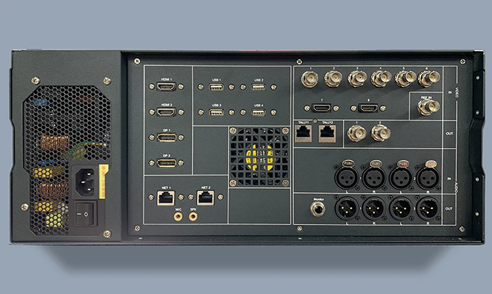
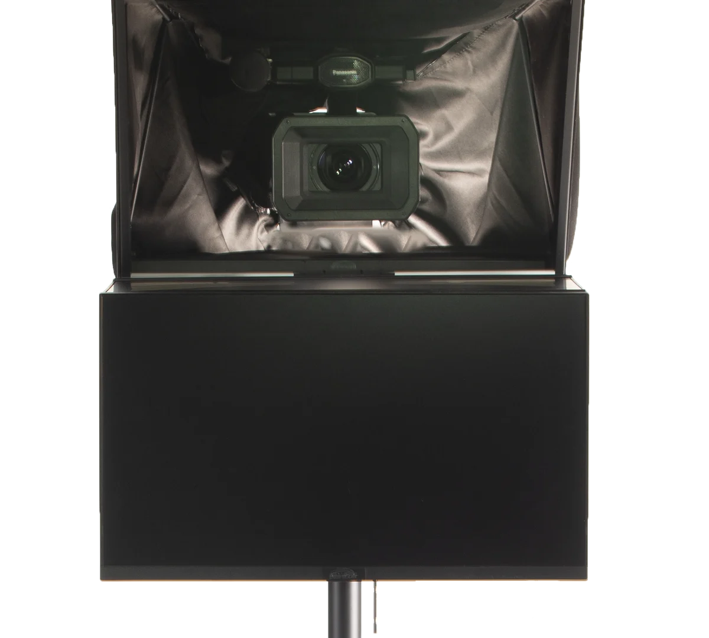
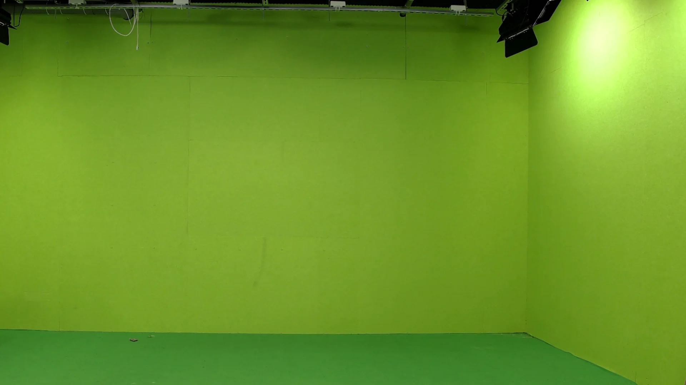
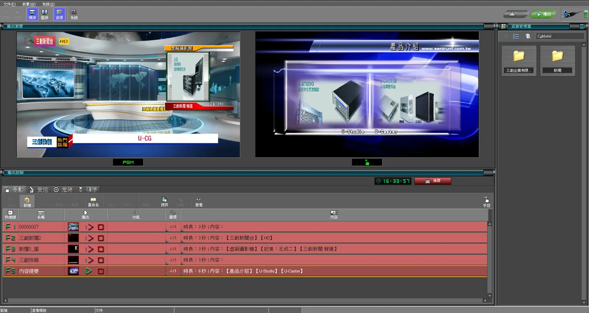
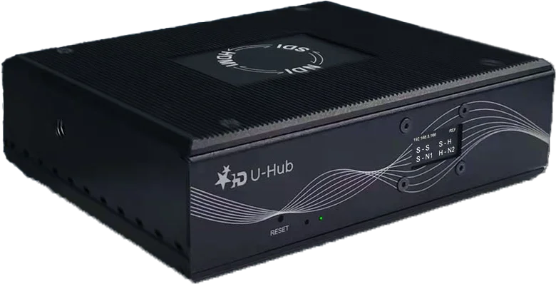
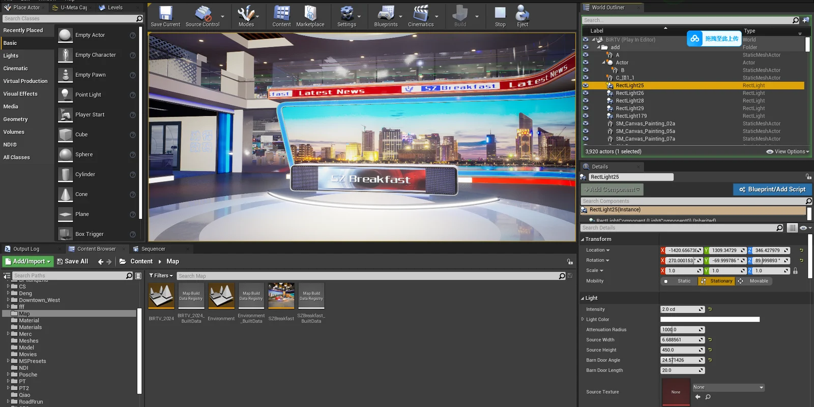

企業直播
品牌發表直播專案
以專業拍攝環境搭配多機位切換，提升品牌活動呈現與直播穩定度。
從企業直播、課程到虛擬節目，依內容目標規劃拍攝、導播、訊號與輸出流程。
本頁為應用情境說明，非客戶實績或合作授權聲明。客戶名稱、成品與現場照片僅會在取得書面授權後發布。

以專業拍攝環境搭配多機位切換，提升品牌活動呈現與直播穩定度。

支援講師、簡報與場景整合，建立穩定的教育內容製作流程。

透過多機與空間規劃，提升內容節奏與節目質感。

適合需要兼顧專業感與品牌辨識度的商務內容製作。

支援來賓訪談、主持串場與內容後續剪輯應用。

結合綠幕與虛擬背景，創造更具層次的視覺效果。
我們重視的不只是畫面呈現，也包含拍攝效率、流程穩定度與後續內容可延伸性。 因此每個專案都會依照形式與目的，調整更合適的拍攝與製播方式。